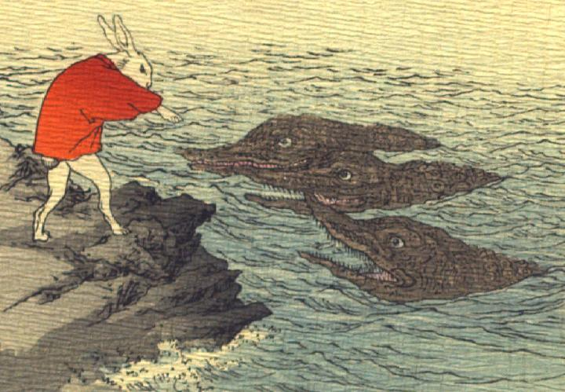

わに達に話しかける白兎。兎は赤い羽織をまとい、海辺の岩場に立って、3体のわにに話しかけている。わには丸く青い目玉を持ち、鼻は無く、口は先が長く尖り、大きく裂けている。開いた口に鋭い歯がたくさん並んでいる。全身の肌は黒っぽく、ごつごつしている。
著作者：J.Dautremer／出典：親書誌：U426_nichibunken_0103：Le lièvre d'Inaba／日付：2006／資源識別子：U426_nichibunken_0103_0004_0000
Copyright (c)2010- International Research Center for Japanese Studies, Kyoto, Japan. All rights reserved.